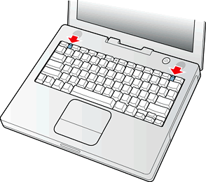
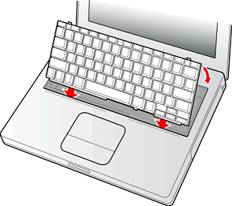

The keyboard is removable to allow access to the internal components and expansion connectors inside the computer. The keyboard is held in place by a locking screw and two latches.
To unlock the keyboard, the user turns a slotted screw that is part of the Num Lock LED, which is between the F5 and F6 function keys. Turning the screw 180 locks or unlocks the keyboard.
| Note: The iBook computer leaves the factory with keyboard locking screw in the unlocked position. |
The two latches are between the ESC key and the F1 key and between the F11 and F12 keys. The user can release the latches by pulling them toward the front of the computer; see Figure 3-5.
Figure 3-5 Unlocking the keyboard
ImportantWhen replacing the keyboard, make sure the latches at the top line up with the corresponding slots in the case; see Figure 3-6.
Figure 3-6 Replacing the keyboard
To gain access to the RAM expansion slot takes further steps. For a full description, see "USB Connector".